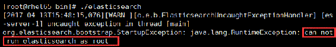
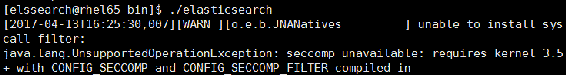
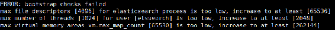
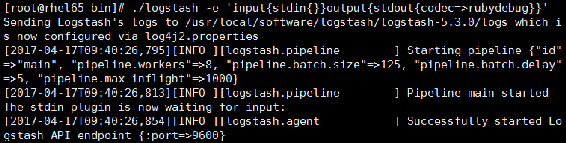
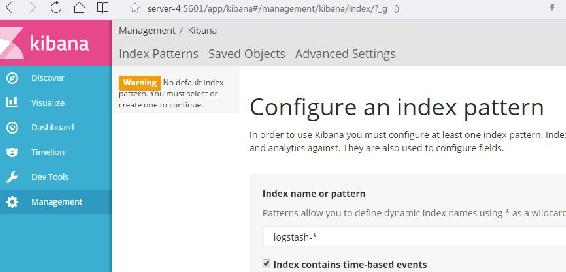

首先登录Elasticsearch官方网站https://www.elastic.co/downloads/elasticsearch下载ELK的安装包，这里下载的ELK版本分别为elasticsearch-5.3.0.tar.gz、logstash-5.3.0.tar.gz和kibana-5.3.0-linux-x86_64.tar.gz，然后将安装包上传到服务器进行解压安装。
将elasticsearch-5.3.0.tar.gz上传到服务器相应安装目录，这里上传至/ /usr/local/software/ elasticsearch目录，然后按照以下步骤进行安装验证。
（1）安装及配置。执行tar –xzvf elasticsearch-5.3.0.tar.gz解压安装包。这里不再介绍如何将ELK的安装路径添加到系统环境变量，为了讲解方便，我们记Elasticsearch的安装路径/ /usr/local/software/elasticsearch/elasticsearch-5.3.0为ELS_HOME。
解压后，进入${ELS_HOME}/config目录，修改elasticsearch.ym配置文件，由于是Elasticsearch的单机版安装，所以仅增加或修改如表9-1所示的配置。
表9-1 elasticsearch.ym部分配置属性说明
|
属 性 名 |
描 述 |
|---|---|
|
cluster.name |
用于标示一个elasticsearch集群的集群名称，无论是单机版还是集群，建议都设置该配置 |
|
node.name |
elasticsearch集群中各节点名称 |
|
path.logs |
设置日志文件的存储路径，默认是${ELS_HOME}/logs目录 |
|
path.data |
设置索引数据的存储路径，默认是${ELS_HOME}/data目录，可以设置多个存储路径，以逗号隔开 |
|
network.host |
设置节点host，默认是localhost，为了对外提供HTTP访问，这里修改一个可外部访问的ip地址或者域名 |
|
http.port |
设置对外服务的HTTP端口，默认是9200 |
在config目录下还有一个日志配置的log4j2.properties文件，Elasticsearch使用Log4j来记录日志，读者可以根据实际需要进行设置。
（2）启动运行。进入${ELS_HOME}/bin目录下，运行Elasticsearch启动脚本，执行命令如下：
./ elasticsearch因为是首次启动验证，希望在控制台直接打印启动日志以方便查看启动过程，所以在启动时并没有加参数-d，若启动时加参数-d表示以后台服务线程方式运行。由于Elasticsearch是运行在JVM之上，因此在启动时还可以指定JVM相关参数设置。该命令执行后，控制台输出日志如图9-2所示。

图9-2 Elasticsearch启动时在控制台输出的日志
因为这里是在root用户下直接运行Elasticsearch的启动脚本，而Elasticsearch从安全方面考虑不允许以root用户的身份直接运行Elasticsearch，所以会导致启动失败。因此，接下来要创建一个运行Elasticsearch的用户elssearch，具体步骤如下。
（1）创建elssearch用户组。创建用户组，命令如下：
groupadd elssearch（2）创建用户elssearch。创建一个elssearch的用户，并将该用户加入到elssearch用户组，同时设置该用户登录密码为elssearch，命令如下：
useradd elssearch –g elssearch –p elssearch（3）更改Elasticsearch安装目录所属用户。修改elasticsearch安装目录及其子目录属于elssearch用户，进入/usr/local/software/elasticsearch目录下，执行命令如下：
chown –R elssearch:elssearch elasticsearch（4）切换到elssearch用户。切换到新创建的用户elssearch，命令如下：
su elssearch进入${ELS_HOME}/bin目录，再次启动elasticsearch。控制台打印日志中包括警告信息如图9-3所示。

图9-3 Elasticsearch启动时的警告信息
该警告信息显示由于当前的操作系统不支持SecComp，而Elasticsearch默认配置项bootstrap.system._call_filter为true，这会导致在运行系统调用过滤器进行检测失败，因而出现以下错误：
ERROR: bootstrap checks failed
system call filters failed to install; check the logs and fix your configuration or disable system call filters at your own risk因此禁止调用过滤器进行检测，修改elasticsearch.yml配置中关于Memory的两个配置项，修改结果如下：
bootstrap.memory_lock: false
bootstrap.system_call_filter: false在启动时还会遇到用户最大可创建文件数过小、用户可创建的线程数过小以及最大虚拟内存太小问题，启动日志如图9-4所示。

图9-4 Elasticsearch启动时的相关错误信息
切换到root用户，分别执行以下操作。
* soft nofile 65536
* hard nofile 131072
* soft nproc 2048
* hard nproc 4096 * soft nproc 1024 vm.max_map_count=655360 sysctl –p {
"name" : "es-server-1",
"cluster_name" : "es-application",
"cluster_uuid" : "ecMHYeNITHSSDbPtxXFL2w",
"version" : {
"number" : "5.3.0",
"build_hash" : "3adb13b",
"build_date" : "2017-03-23T03:31:50.652Z",
"build_snapshot" : false,
"lucene_version" : "6.4.1"
},
"tagline" : "You Know, for Search"
}至此，elasticsearch安装成功。若希望关闭elasticsearch，则直接杀掉其进程号。
将Logstash安装包解压到安装目录下，为了讲解方便，记Logstash安装目录为LOGSTASH_HOME。关于Logstash的相关配置，在这里暂时不进行介绍，等我们将ELK与Kafka整合应用时会进行相应配置讲解。Logstash的安装就这么简单，解压后基本完成了安装。
进入${LOGSTASH_HOME}/bin目录下，执行以下命令启动Logstash，验证Logstash安装是否成功：
logstash -e 'input{stdin{}}output{stdout{codec=>rubydebug}}'以上命令指定了从控制台接收输入，并输出到控制台。参数codec指定了数据输出的表现形式，采用RubyAwsomePrint库来解析日志，若希望以JSON格式输出，则设置codec=>json即可。启动命令执行后，若在控制台输出如图9-5所示的启动日志，则表示Logstash启动成功。

图9-5 Logstash启动日志
Logstash启动后在控制台等待用户的输入，我们在控制台输入“hello logstash”，控制台输出如图9-6所示信息。
图9-6 Logstash在控制台显示收集的数据
由图9-6可知：在数据输出时增加了一个时间戳，@timestamp默认是使用UTC时间表示，因此与北京时间相比会有8小时的时差。至此Logstash安装验证完成。
将Kibana安装包解压到安装目录下，为了方便讲解，这里将Kibana安装路径记为KIBANA_HOME。然后进入${KIBANA_HOME}/config目录下，修改kibana.yml配置文件，配置连接Elasticsearch。这里仅修改如表9-2所示的配置。
表9-2 kibana.ym部分配置属性说明
|
属 性 名 |
描 述 |
|---|---|
|
server.name |
kibana服务器的一个标识名称 |
|
server.host |
配置kibana对外提供HTTP访问的地址，默认是localhost |
|
server.port |
配置kibana对外提供HTTP访问的端口，默认是5601 |
|
elasticsearch.url |
连接elasticsearch的地址，即elasticsearch配置的对外HTTP地址 |
|
elasticsearch.username |
设置elasticsearch所属用户的用户名 |
|
elasticsearch.password |
设置elasticsearch所属用户的用户登录密码 |
进入${KIBANA_HOME}/bin目录，执行Kibana启动脚本：
nohup ./kibana >> ../logs/kibana.log &Kibana启动成功后会默认占用5601端口，因此若希望关闭Kibana，首先查看5601端口被占用情况，然后kill kibana对应的进程号，命令分别如下：
lsof -i:5601 # 查看kibana进程
kill -9 kibana进程号 # 关闭kibana在浏览器访问Kibana，初次运行Kibana管理界面如图9-7所示。

图9-7 Kibana管理界面